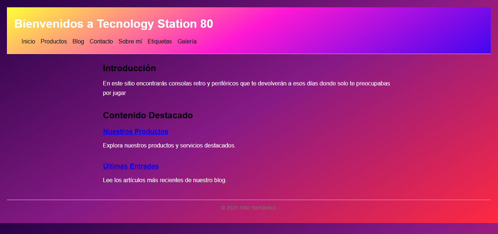

Proyectos

Página para iniciar sesión
Una página para iniciar sesión o registrarse con temática de Blue Lock
Ver en GitHub

Página Semantica
Una Pagina donde ver productos y una breve descripcion de etiquetas semanticas
Ver en GitHub